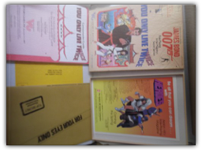
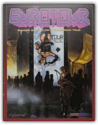
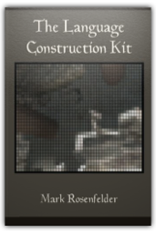
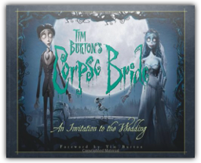
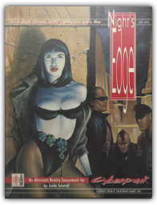
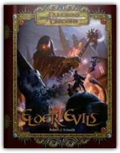

|

You Only Live Twice
Neil Randall, Gerry Klug

You Only Live Twice (James Bond 007 role playing game, 35008) 
Find up-to-the-minute information about: * Security and Insurgent Forces of all nations. * Surveillance and Communication Equipment * Special Weapons and Personal Protection Equipment. * Space Exploration Equipment. * Equipment that's still on the drawing board. * Spy Weapons. * Firearms of the world. * Vehicles.

Eurotour
Jean-Michel; Seter, Magnu Mark; Ringuet
Book by Mark; Ringuet, Jean-Michel; Seter, Magnu 
Star Wars: The Blueprints brings together the original technical drawings from deep within the Lucasfilm Archives. Combined with commentary from J. W. Rinzler, the collection maps in precise, vivid, and intricate detail the genesis of one of the most enduring onscreen stories. Special features: more than 250 blueprints; more than 500 photographs and illustrations; and, ten gatefolds.
Winner Most Innovative New Product, 2011 Gaming Genius Awards 
The wizard Fez has faith in the abilities of adventurers. But Mephistopheles isn't as confident. So a pact was made between the wizard and the demon. As each bargained madly to outdo the other's bet, Fez was trapped in a magical sleep. More than just a wizard's pact is at stake as you strive to accomplish the seven "impossible" tasks. FEZ II is an module which will challenge your ability to overcome dangers, solve problems, and adjust quickly to the unexpected. It was the wizard Fez that made the deal with the demon, but it is you who must make good on ... FEZ II: THE CONTRACT, is a fantasy roleplaying module for four to eight players from third to eighth skill level Suitable for use with all popular roleplaying systems including Advanced Dungeons and Dragons. |

The Language Construction Kit
Mark Rosenfelder
Create plausible and realistic languages for RPGs, fantasy and science fiction, movies or video games, or international communication... or just learn about how languages work from an unusual, light-hearted perspective. The Language Construction Kit on zompist.com has helped a generation of conlangers to understand and create languages. It's expanded here with coverage of semantics and pragmatics, language families, writing systems, and sample wordlists, as well as an annotated sample grammar. Second revised edition (1.2). 
3-panel screen. Plus: WHEN THE CHIPS ARE DOWN; a 32 page Cyberpunk adventure.

Tim Burton's Corpse Bride: An Invitation to the Wedding
Mark Salisbury
A stunning visual companion to the newest film from Tim Burton (The Nightmare Before Christmas, Edward Scissorhands, Charlie and the Chocolate Factory), featuring storyboards, movie stills, and Burton's own drawings. 
This is a CYBERPUNK 2020 adventure designed for experienced players and Night City sourcebook is referred to a great deal so it is recommended that you have a adventure has been designed to fit within almost any Campaign as it is free form, giving all the characters the necessary information to run it while allowing the characters to proceed at their own pace.

Night's Edge
Justin Schmid
An techno-horror alternate reality sourcebook for Cyberpunk 2020. It contains rules covering mostly vampires but also their brethren, lycanthropes and were-wolves. Also included are rules for vampire hunters and psychic powers.

Elder Evils
Robert J. Schwalb
High-level threats for your Dungeons & Dragons(R) campaign.
The making of devotional papercuts is a relatively little-known aspect of traditional Jewish folk art and culture. While many ritual objects treasured today as "Judaica" were crafted from expensive materials, often by gentile artisans executing paid commissions, even the poorest Jew could afford paper, pencil, and penknife with which to make a papercut as a deeply-felt, personal expression of faith. Many of these works are gems of unaffected artistic creation. More than any other form of Jewish art, the surviving old Jewish papercuts evoke the spirit and lore of the East-European shtetl and the North African mellah. By the mid-20th century, however, the venerable Jewish papercutting tradition had become another lost folk art. This lavishly illustrated, full-color volume features many Jewish papercuts from Eastern and Central Europe reproduced here for the first time. These, and such works from Middle Eastern, North African, and North American Jewish communities incorporate an unparalleled wealth of Jewish symbols. Joseph and Yehudit Shadur's discussions of these configurations constitute a basic presentation of Jewish iconography of the last three centuries. The culmination of over twenty-five years of their searches and research on four continents, Traditional Jewish Papercuts is the definitive work on the subject. The Shadurs' initial, profusely-illustrated, Jewish Papercuts: A History and Guide, published in 1994, won the annual National Jewish Book Council Award for the outstanding book in the visual arts. Their present work, Traditional Jewish Papercuts: An Inner World of Art and Symbol, offers readers much new material, insights, and interpretations, with detailed chapters on sources, typologies, and techniques. A special chapter deals with modern imitations and fraudulent works aimed at the collectors' market. An expanded, selective bibliography and an index are appended. |

My Library
Collection Total:
265 Items
265 Items
Last Updated:
Apr 9, 2016
Apr 9, 2016

 Made with Delicious Library
Made with Delicious Library